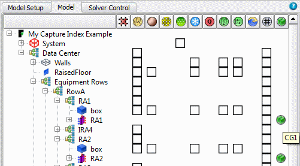

Cooler
Group attachments can be seen in the summary information table provided
they have been switched on for display.
Procedure
- Select part of the data tree
and either click the Show Summary icon
or press the I key.
- Optionally, to improve readability by filtering
the data tree, do the following:
- Press Ctrl+F to open the Find dialog box. Stay
in the Quick Criteria tab.
- For Type, select Cooler or Rack.
- Check the Filter check box.
- Click Find.
Results
Hover text displays
group names, for example, see Figure 1.
Figure 1. Display of Cooler Groups
in the Data Tree Summary